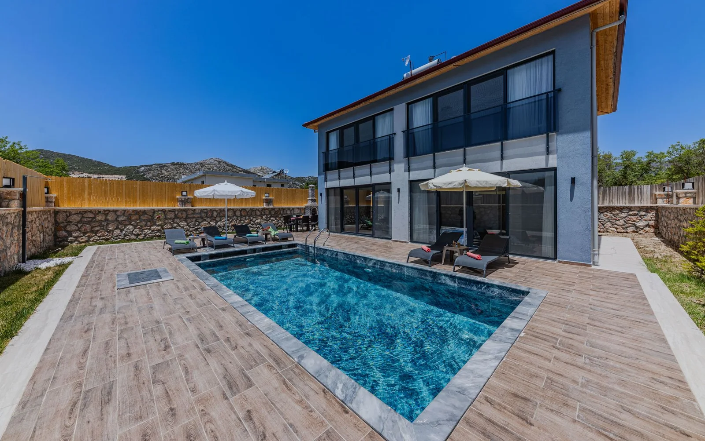
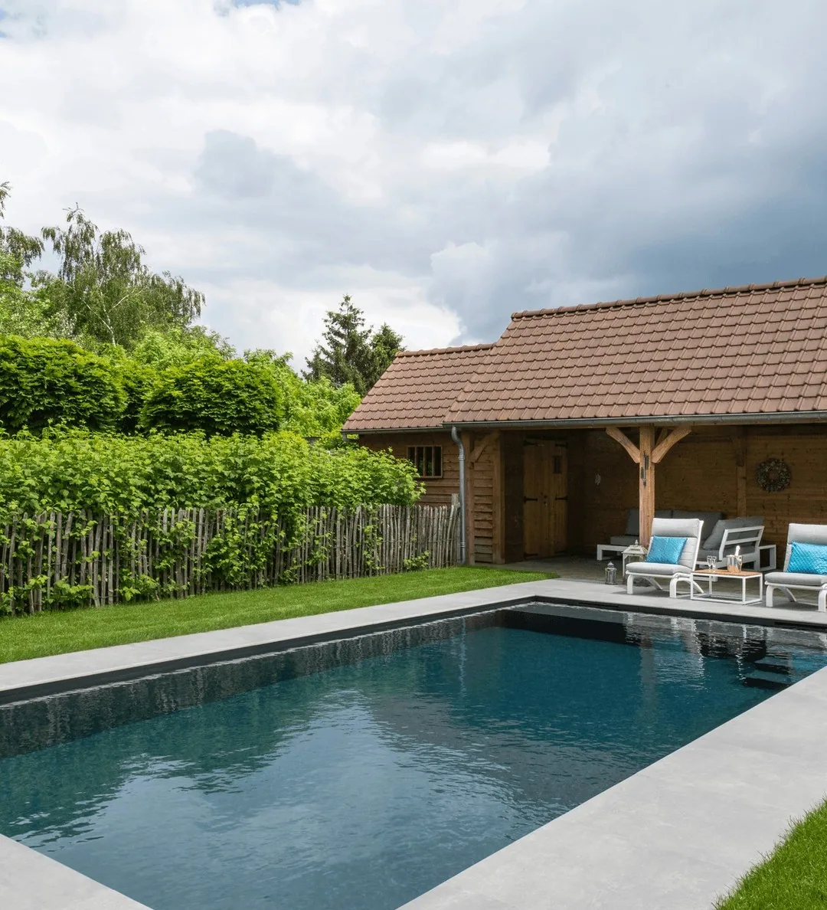
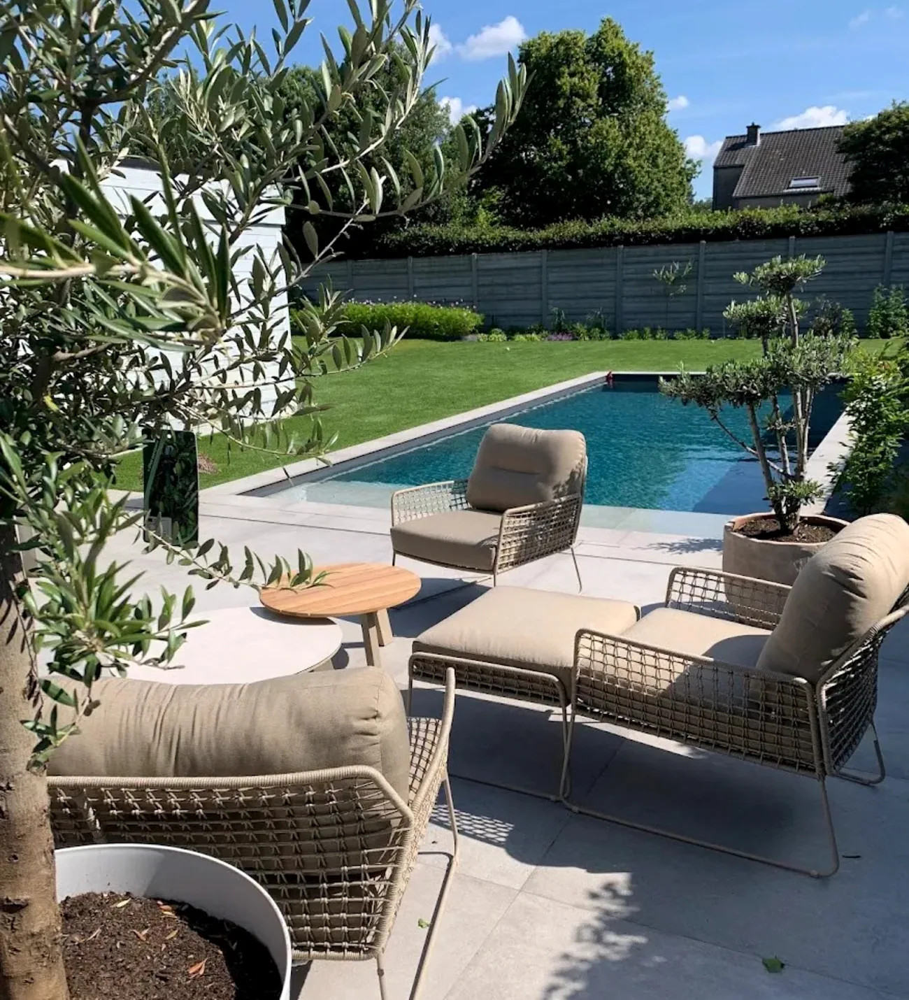
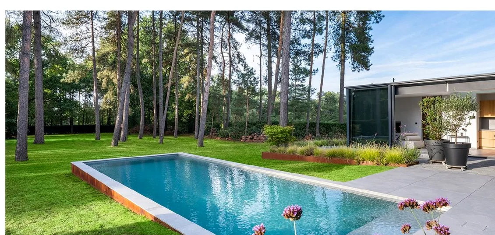
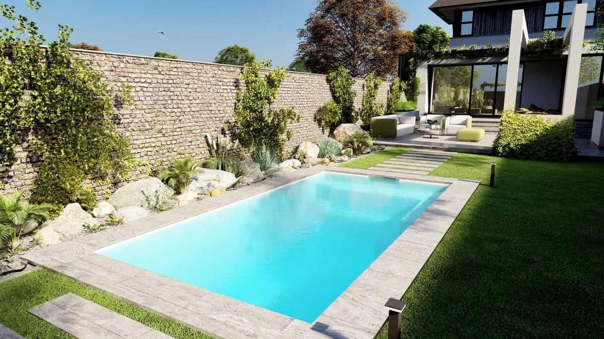
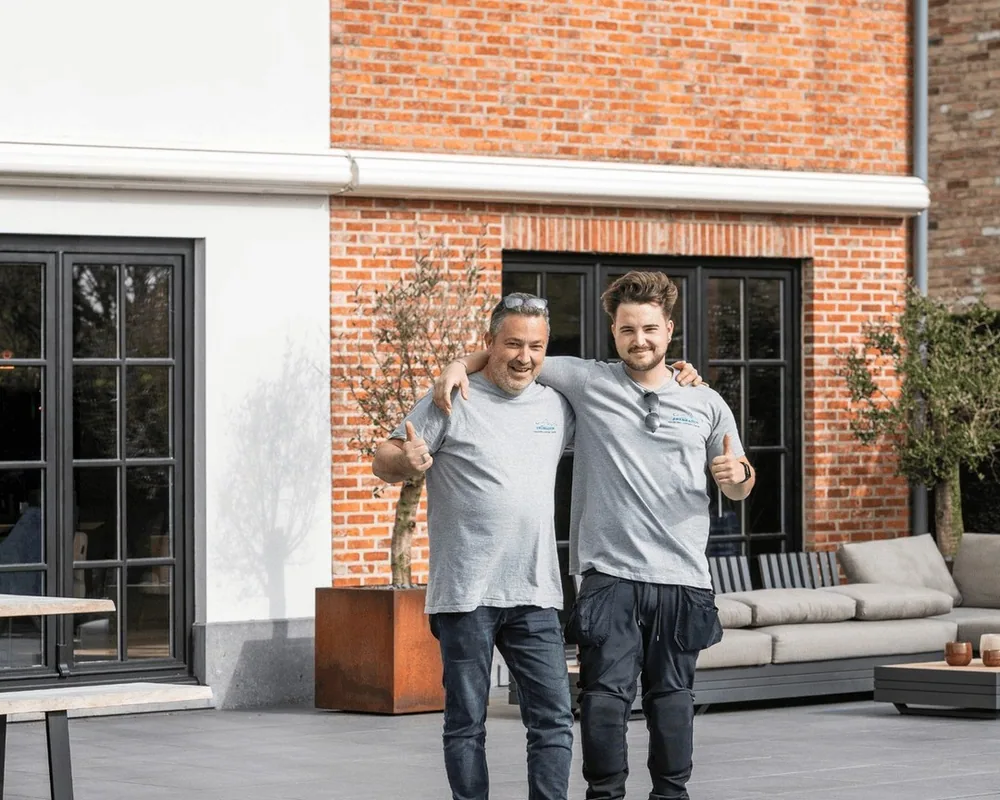
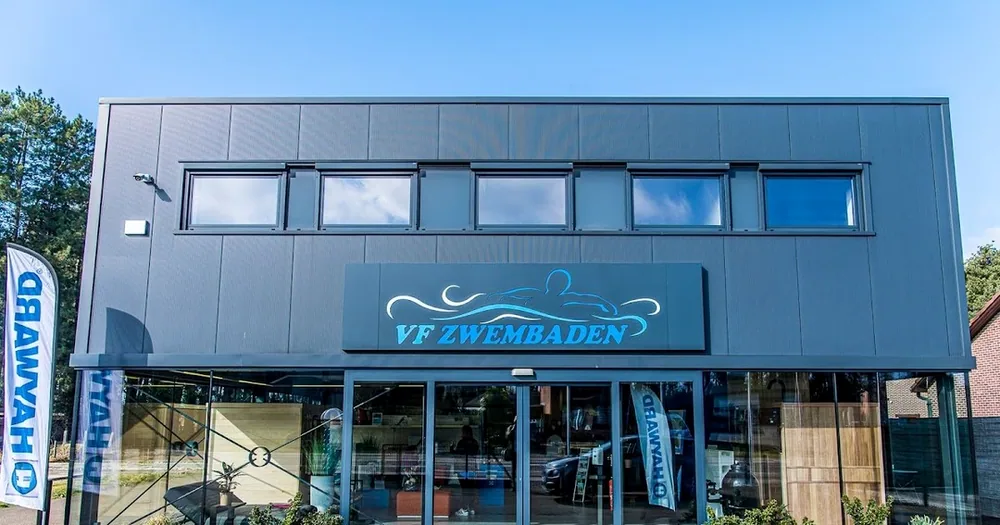

Monoblok op maat
Strak, minimalistisch en ook als donker overloopbad dat je tuin weerspiegelt. Met zo'n bad wonnen we brons bij de verkiezing van Beste Zwembadbouwer van België.
Bekijk het bekroonde bad
Van het eerste gesprek tot de eerste duik. Filip en Simon bouwen zwembaden op maat die lekvrij zijn, zuinig draaien en jaren meegaan. In je tuin, of als zelfbouwer met hun hulp.
Ze hebben allemaal hun eigen voordelen. Wat ze gemeen hebben: lekvrij, duurzaam en gemaakt voor jouw tuin.
Strak, minimalistisch en ook als donker overloopbad dat je tuin weerspiegelt. Met zo'n bad wonnen we brons bij de verkiezing van Beste Zwembadbouwer van België.
Bekijk het bekroonde badMaximale vrijheid in ontwerp, extreem stevig. Ideaal voor complexe vormen en een lange levensduur.
Snel geplaatst en uitstekend geïsoleerd, dus lage energiekosten. Voor wie tempo en zuinigheid zoekt.
Je bouwt zelf, met onze materialen, plannen en een vaste vraagbaak tot het opstarten.
Natuurlijk zwemmen, zonder chloor. Met helder water dankzij slimme filtering.
Ook een zwemvijver vol algen bouwen we om naar een helder bad dat je weinig werk geeft.
Sauna, spa en totaalprojecten rond je bad, zodat alles in één stijl afgewerkt is.
Een zwembad hoeft geen dure gewoonte te zijn. Met slimme techniek bespaar je water, stroom en onderhoud, zonder in te boeten op comfort.
Onze filters verversen niet constant. En toch is je water vier keer helderder dan met een klassieke filter.
Zuinige pompen en slimme verwarming, dus een lagere factuur.
Hydrolyse in plaats van chemie. Geen prikkende ogen, geen geur.
We bestuderen eerst je ondergrond, ook hier in Beringen.

Drie tuinen waar we de voorbije tijd mochten bouwen. Elk bad is anders, net als de mensen die erin zwemmen.

Na een minder goede ervaring met een vorige aannemer klopten de eigenaars bij ons aan. Nu is het een oase van rust met een lounge aan het water.

Strak maatwerk, technisch tot in de puntjes, zuinig en makkelijk te onderhouden.

Een polypropyleen kuip die perfect aansluit op het terras en de tuin errond.
Filip runde dertien jaar een restaurant, ontdekte de zwembadbouw en opende bijna twintig jaar geleden VF Zwembaden.
Water is zijn ding, ook buiten de werf: surfen, kitesurfen, windsurfen. Zijn zoon Simon is elektricien van opleiding en werkt nu mee in de zaak. Samen staan ze er van het eerste gesprek tot lang na de oplevering, want bij ons stopt de service niet als het bad vol staat.

"De installatie zelf is vlekkeloos, ontzettend vakkundig en heel netjes uitgevoerd door een super vriendelijk en professioneel team. We zijn echt ontzettend blij met ons prachtige zwembad en de heldere uitleg over het filtersysteem met hydrolyse."Ddieter rymenGoogle review
"Wij hebben via VF een zelfbouwpakket gekocht. Naast correcte informatie op voorhand, kwaliteit van de materialen en goeie plannen zijn we ook heel tevreden over de hulp die ze geboden hebben tijdens het proces."MMichiel LambrechtsGoogle review
"Een prachtig zwembad en een samenwerking die we absoluut aanraden! Vanaf de eerste kennismaking met VF Zwembaden hadden we meteen een warm en familiaal gevoel. Het klikte onmiddellijk, alsof we elkaar al jaren kenden!"GGeertGoogle review
Stuur een foto van je tuin en wat je in gedachten hebt. Of kom langs in onze winkel in Paal voor advies, producten en materialen.

Ik maakte deze demo voor jullie om te tonen wat er kan. Na een kort gesprek maak ik er iets veel persoonlijkers van, helemaal naar jullie wens.
Vrijblijvend. Ik kom langs of we bellen.
Op maat, op jullie eigen domein.
Geen voorschot. Jullie betalen pas als alles klaar is.
Hosting, domeinnaam en kleine wijzigingen, zoals nieuwe openingsuren.
Omdat een voorbeeld meer zegt dan een mail. Zo zien jullie meteen wat er kan, en het kost jullie niets.
Nee. Het gesprek is vrijblijvend. Vinden jullie het niks, dan is het daarmee gedaan.
Na ons gesprek staat jullie site binnen 10 tot 14 dagen online.
Zeker. Jullie domeinnaam kan gewoon blijven, de nieuwe site komt in de plaats van de oude.
Nee, dat doe ik op basis van ons gesprek. Eigen foto's zijn mooi meegenomen, maar niet nodig om te starten.